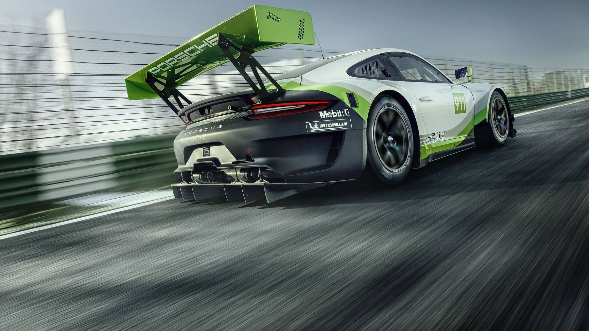

The brake system of the 911 GT3 R also underwent further modifications and, thanks to increased stiffness and more precise control of the ABS, is even better suited to long distance racing. At the front axle, six-piston aluminium monobloc racing brake callipers combined with ventilated and grooved steel brake discs with a diameter of 380 millimetres ensure outstanding braking performances. Fitted at the rear axle are four-piston callipers and discs measuring 372 millimetres.
Adopted from its production sibling, the 911 GT3 R features the distinctive double-bubble roof, and the wheelbase which had been lengthened by 8.3 centimetres compared to the previous generation. This ensures a more balanced weight distribution and more predictable handling particularly in fast corners corners in comparison to the previous GT3 R. By applying systematic lightweight solutions for the body, add-on parts, and suspension, the engineers significantly optimised the centre of gravity position of the GT3 R compared to the predecessor model.
The lightweight body design of the 911 GT3 RS production sports car featuring intelligent aluminium-steel composite construction has proven to be the ideal basis for the race car. The roof, front cover and fairing, wheel arches, doors, side and tail sections as well as the rear cover are made of particularly light carbon-fibre composite material (CFRP). All windows – and for the first time even the windscreen – consist of polycarbonate
Aerodynamics
The aerodynamics of the 911 GT3 R also follows the example of the road car. The distinctive wheel arch air vents on the front fairings increase downforce at the front axle.

Measuring two metres in width by 40-centimetres in depth, the rear wing lends aerodynamic balance. From its 911 RSR big brother, the GT3 R has adopted the concept of the centrally-positioned radiator. By eliminating the side radiators, the position of the centre of gravity was improved, the radiator is better protected against collision damage, and the venting of hot air through louvers in the front cover was enhanced.
Source/Reference: https://www.theracersgroup.com/racecars/porsche-911-gt3-r-991/